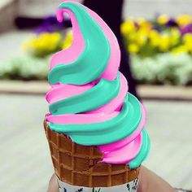
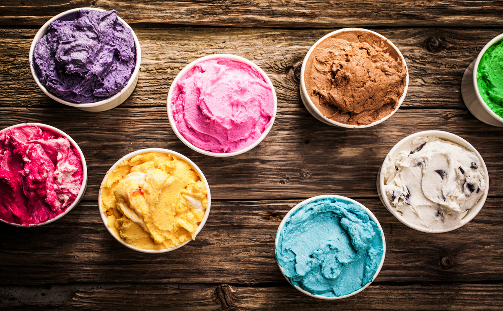
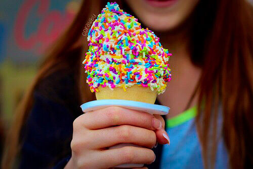

Ice Cream
Ice cream is a sweetened frozen food typically eaten as a snack or dessert. It is usually made from dairy products, such as milk and cream, and often combined with fruits or other ingredients and flavours. It is typically sweetened with sugar or sugar substitutes. Typically, flavourings and colourings are added in addition to stabilizers. The mixture is stirred to incorporate air spaces and cooled below the freezing point of water to prevent detectable ice crystals from forming. The result is a smooth, semi-solid foam that is solid at very low temperatures.
Recipe Origin
Ice cream is a sweetened frozen food typically eaten as a snack or dessert. It is usually made from dairy products, such as milk and cream, and often combined with fruits or other ingredients and flavours. It is typically sweetened with sugar or sugar substitutes. Typically, flavourings and colourings are added in addition to stabilizers. The mixture is stirred to incorporate air spaces and cooled below the freezing point of water to prevent detectable ice crystals from forming. The result is a smooth, semi-solid foam that is solid at very low temperatures.
Fun Facts
Ice cream is a sweetened frozen food typically eaten as a snack or dessert. It is usually made from dairy products, such as milk and cream, and often combined with fruits or other ingredients and flavours. It is typically sweetened with sugar or sugar substitutes. Typically, flavourings and colourings are added in addition to stabilizers. The mixture is stirred to incorporate air spaces and cooled below the freezing point of water to prevent detectable ice crystals from forming. The result is a smooth, semi-solid foam that is solid at very low temperatures.
Blog
Ice cream is a sweetened frozen food typically eaten as a snack or dessert. It is usually made from dairy products, such as milk and cream, and often combined with fruits or other ingredients and flavours. It is typically sweetened with sugar or sugar substitutes. Typically, flavourings and colourings are added in addition to stabilizers. The mixture is stirred to incorporate air spaces and cooled below the freezing point of water to prevent detectable ice crystals from forming. The result is a smooth, semi-solid foam that is solid at very low temperatures.
| Flavour | Calories |
|---|---|
| Chocolate | 450 |
| Mango | 400 |